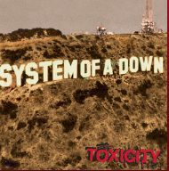
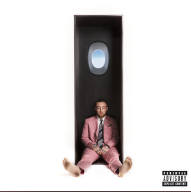

No sleeper seats, that's a mattress
No sleeper seats, that's a mattress (sleep)
You ain't stingy, split your tablets with me
You won't flinch when camera flashin', flashin'
Not fake laid back, no, it's natural
And I think you made for the life I lead
I'm not fake patient, I don't fake sick
That kinda coffin don't need lean, rest in peace
Got this lust for life in me
Horny for the game, uh
First they kiss, then they bite soft, uh
Then that bitch wanna play it off, huh
Fuck it, I'm pretty still in a pit of snakes
While serpents shake some brand new scales
I need a new face, I'm tired of these weirdos
Acting familiar, took all the rock
And turned it to pop, he think that he Elvis
And he ungrateful, they don't say, "Thank you"
They don't say grace, not even for meals, not even for millions
Fuck it, I'm pretty still, look at my deal
Richard Mille, look at my ears, flooded with diamonds
Look at my skills, running through blocks like 49ers
Forty-nine diamonds, stuffed in my bracelet
That cost a whop, that cost a whopper
And it ain't new, I had a knot at John Ehret in my locker
Pretty still, it ain't no pretty pill, it's either real or real
Real easy on the eyes, green like a soccer field
Skin hot when they tried me like them poppers feel
Hands shaking, norepinephrine levels skyrocket, fuel
Rocket f-
Quit being violent with me (yeah, why, why)
Quit being violent with me
Quit being violent with me
Make me violent
My room, my room, my room with me
Every night you were in my room
My room, my room with me
I guess I can't state my feelings too soon
I don't know you
And I can't put no threats in the air
System Of A Down - Toxicity

Looking at life through the eyes of a tire hub
Eating seeds as a pastime activity
The toxicity of our city, our city
You, what do you own the world?
How do you own disorder? Disorder
Now somewhere between the sacred silence
Sacred silence and sleep
Somewhere, between the sacred silence and sleep
Disorder, disorder, disorder
More wood for their fires, loud neighbors
Flashlight reveries caught in the headlights of a truck
Eating seeds as a pastime activity
The toxicity of our city, of our city
You, what do you own the world?
How do you own disorder? Disorder
Now somewhere between the sacred silence
Sacred silence and sleep
Somewhere between the sacred silence and sleep
Disorder, disorder, disorder
You, what do you own the world?
How do you own disorder?
Now somewhere between the sacred silence
Sacred silence and sleep
Somewhere, between the sacred silence and sleep
Disorder, disorder, disorder
When I became the sun
I shone life into the man's hearts
When I became the sun
I shone life into the man's hearts
Mac Miller - Self Care

Mhm, mhm
Okay
Yeah, yeah, yeah, yeah
Yeah, yeah, yeah
Dollars
I switched the time zone, but what do I know?
Spendin' nights hitchhikin', where will I go?
I could fly home, with my eyes closed
But it'd get kinda hard to see, that's no surprise though
And you could find me, I ain't hidin'
I don't move my feet when I be glidin'
I just slide in and then I roll out
Yep
Well, climbin' over that wall (yeah, wall, wall, ) mm
I remember, yes, I remember, yes, I remember it all
Swear the height be too tall (yeah), so like September I fall
(Down, down, down) down below
Now I know that the medicine be on call, yeah (gimme, gimme, gimme)
When it's feelin' like you hot enough to melt, yeah (melt, yeah)
Can't trust no one, can't even trust yourself, yeah (self, yeah)
And I love you, I don't love nobody else, yeah (else, yeah)
Tell them they can take that bullshit elsewhere (yeah)
Self-care, I'm treatin' me right, yeah
Hell yeah, we gonna be alright (we gon' be alright)
I switched the time zone (yeah), but what do I know? (Yeah)
Spendin' nights hitchhikin', where will I go?
I could fly home (yeah), with my eyes closed (yeah)
But it'd get kinda hard to see, that's no surprise though
And you could find me (yeah), I ain't hidin' (yeah)
I don't move my feet when I be glidin'
I just slide in (yeah) and then I roll out
Been on the road
I don't see it
Out on the road
I don't see where I'm going
Yeah, I been readin' them signs (wow, yeah, yeah, yeah, yeah)
I been losin' my, I been losin' my, I been losin' my mind, yeah (yeah)
Get the fuck out the way ('kay), must be this high to play (okay)
It must be nice up above the lights and what a lovely life that I made, yeah (uh)
I know that feelin' like it's in my family tree, yeah (whoa)
That Mercedes drove me crazy, I was speedin'
Somebody save me from myself, yeah
Tell them they can take that bullshit elsewhere
Self-care, we gonna be good
Hell yeah, they lettin' me go-o-o-o-o-o-o-o
I switched the time zone (yeah), but what do I know? (Yeah)
Spendin' nights hitchhikin', where will I go? (Yeah)
I could fly home (yeah) with my eyes closed (yeah)
But it'd get kinda hard to see, that's no surprise though (yeah)
And you could find me (yeah), I ain't hidin' (yeah)
I don't move my feet when I be glidin' (yeah)
I just slide in (yeah) and then I roll out
I didn't know, I didn't know
I didn't know, I didn't know, yeah
Well, didn't know what I was missin', now I see a lil' different
I was, thinkin' too much
Got stuck in oblivion, yeah, yeah
Oblivion, yeah, yeah
Oblivion, yeah, yeah
I got all the time in the world, so for now I'm just chillin'
Plus I know it's a, it's a beautiful feelin'
In oblivion, yeah, yeah
Oblivion, yeah, yeah
Oblivion, yeah, yeah
Yeah
Okay, I ride around my city when I come home, yeah
The sun set quickly, then get up slow, yeah
I just connect and upload
Watch it spin around, we just spinnin' round, yeah
Let's go and travel through the unknown, yeah
We play it cool, we know we fucked though, yeah
You keep on sayin' you in love, so
Tell me, are you really down? Are you really down? Yeah
Let's go back to my crib and play some 45's
It's safe in there, I know there's still a war outside
We spend our nights all liquored up, our mornings high
Can you feel it now?
Oblivion, yeah, yeah
Oblivion, yeah, yeah, yeah, yeah, yeah, yeah, yeah
Oblivion, yeah, yeah
Ooh-ooh, ooh-ooh
I got all the time in the world, so for now I'm just chillin'
Plus, I know it's a, it's a beautiful feelin'
In oblivion, yeah, yeah
Oblivion, yeah, yeah
Oblivion, yeah, yeah